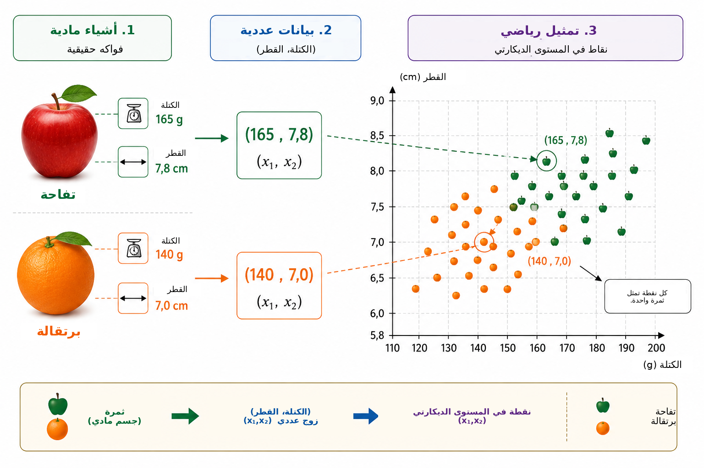
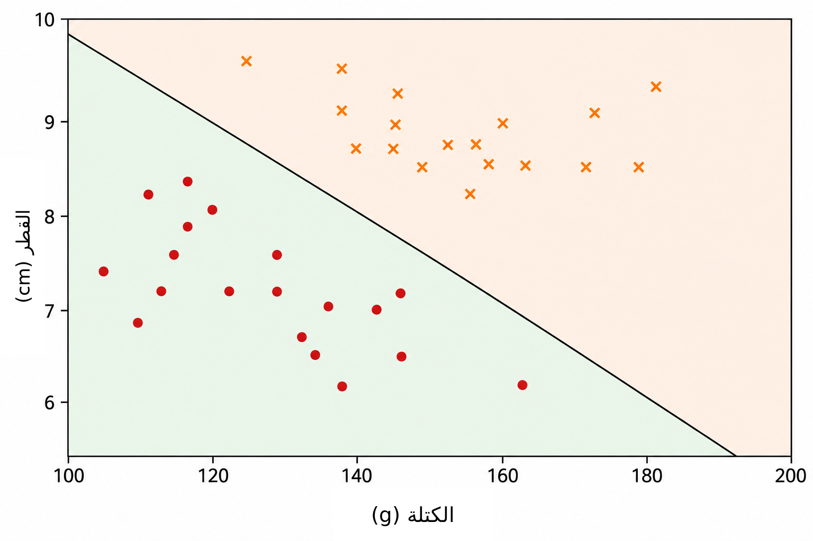
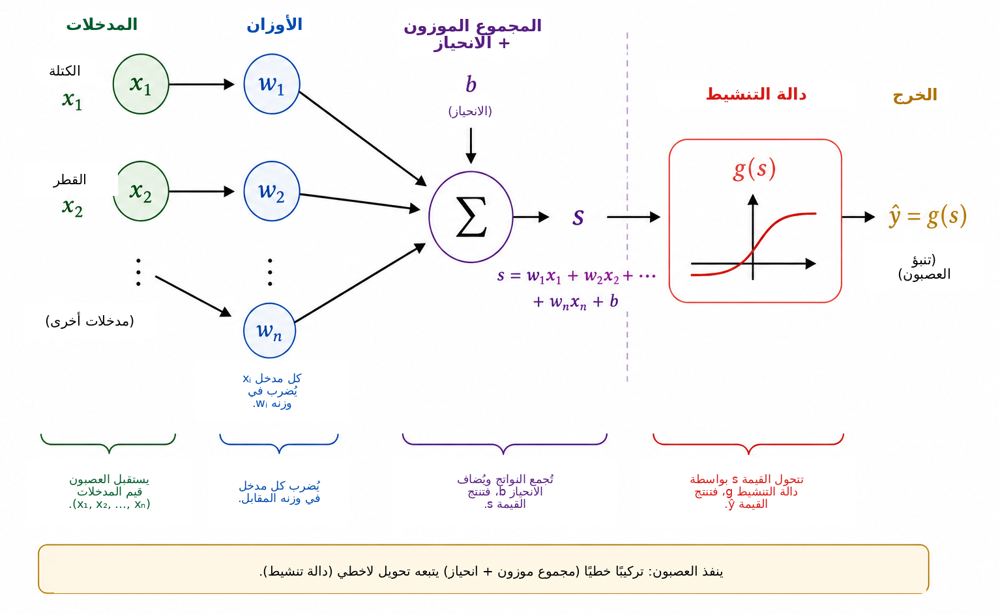
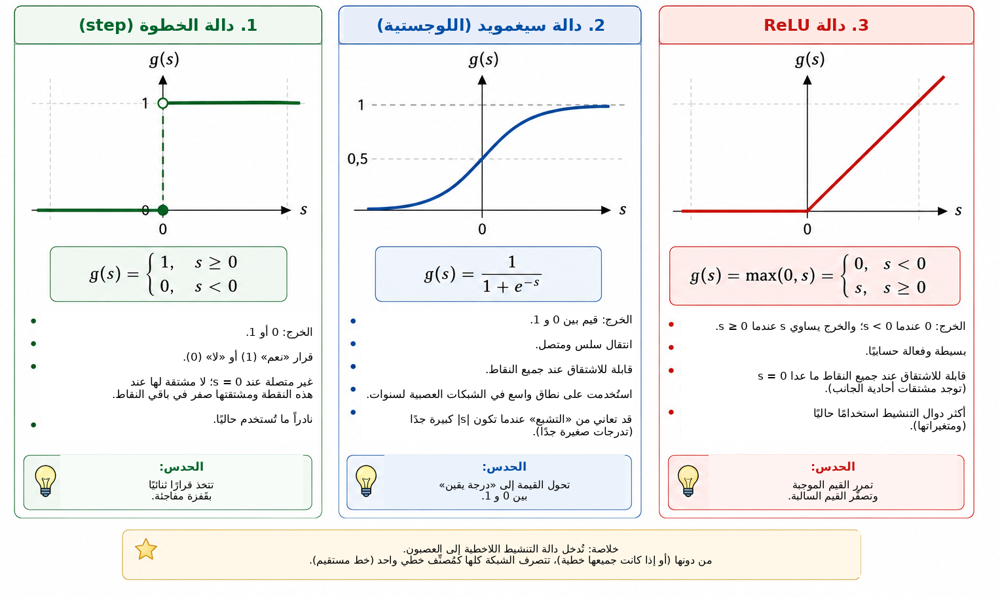
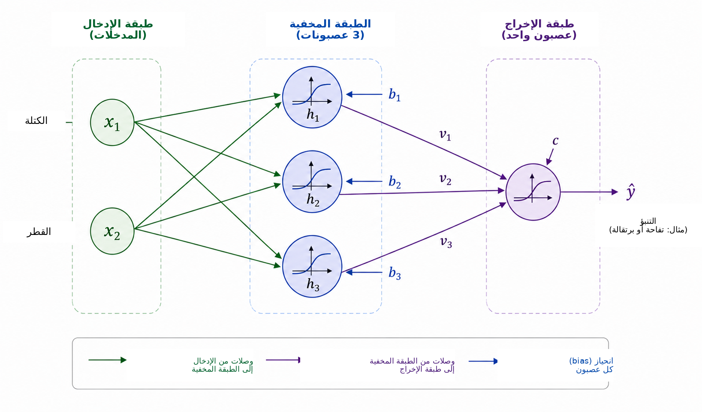
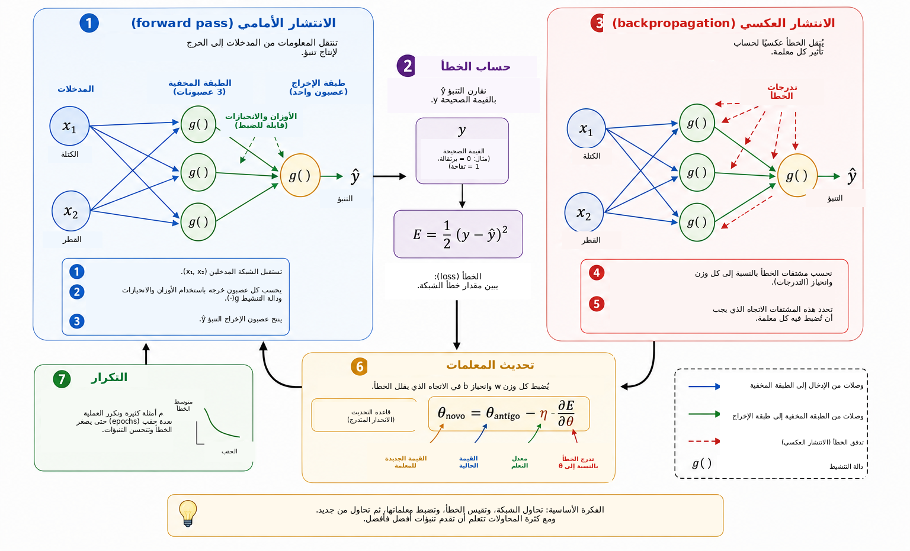
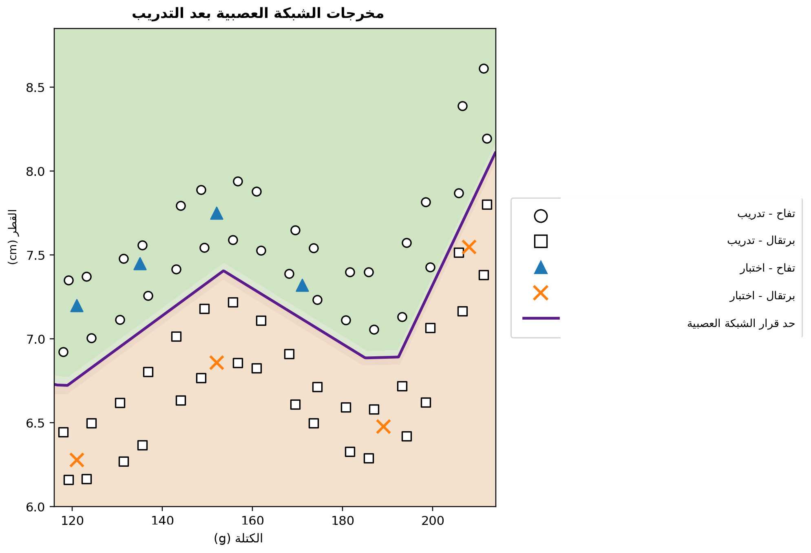

متى يستطيع الحاسوب أن يتعلم؟
في حياتنا اليومية نتخذ قرارات تصنيفية من دون أن نشعر بذلك تقريبًا. فعندما ننظر إلى ثمرة نتعرف سريعًا إلى كونها تفاحة أو برتقالة؛ وعندما تصل رسالة إلى الهاتف نميز بين محادثة حقيقية وإعلان غير مرغوب فيه؛ وفي التحليل الطبي يمكن دمج عدة قياسات لدعم قرار؛ وفي المؤسسات المالية تُقيَّم معلومات متعددة قبل منح الائتمان. وفي جميع هذه الأمثلة تُؤخذ عدة خصائص معًا لإنتاج إجابة.
في كثير من برامج الحاسوب التقليدية يكتب المبرمج صراحةً القواعد التي تنتج هذه الإجابة. وينجح هذا الأسلوب عندما تكون القواعد معروفة ويمكن التعبير عنها بوضوح، لكنه يصبح أقل فاعلية عندما تكون البيانات شديدة التباين أو عندما يصعب صياغة كل الشروط اللازمة لاتخاذ قرار جيد مسبقًا. وهذا يقود إلى سؤال طبيعي:
هل يمكننا بناء برنامج يتعلم قاعدة اتخاذ القرار من الأمثلة بدلًا من أن يتلقى القاعدة مسبقًا؟
هذه إحدى الأفكار المركزية في تعلم الآلة، وهو مجال من مجالات الذكاء الاصطناعي يهتم بالطرائق التي تلائم النماذج انطلاقًا من البيانات . في مسألة التعلم الخاضع للإشراف تتلقى الخوارزمية أمثلة مع إجاباتها الصحيحة، ونبحث عن نموذج يستطيع أيضًا تقديم تنبؤات مفيدة لحالات لم تُستخدم أثناء التدريب. ومن بين النماذج الكثيرة المطورة لهذا الغرض أصبحت الشبكات العصبية الاصطناعية مهمة في تطبيقات مثل التعرف على الصور ومعالجة اللغة وتحليل الإشارات والتنبؤ بالسلاسل الزمنية .
سبق أن ناقش باتيستا ومارتينز في مجلة Professor de Matemática Online استخدام الشبكات العصبية بوصفها جسرًا بين الرياضيات والحوسبة والتعليم المدرسي ، وقدما نشاطًا يجمع بين إعداد المعلمين وبايثون والتعرف على الأرقام. يسلك هذا المقال مسارًا مكملًا. وهدفنا الرئيس هو كشف البنية الرياضية الداخلية لشبكة عصبية صغيرة، بدءًا من الهندسة التحليلية والتقدم خطوةً خطوة نحو حساب التدرج والتنفيذ اليدوي للانتشار العكسي.
على الرغم من تعقيد التطبيقات الحديثة، يمكن تقديم الجوهر الرياضي للشبكة العصبية باستخدام أفكار مألوفة نسبيًا. ففي المستوى الأساسي، الشبكة العصبية تركيب لدوال تُضبط معلماتها استنادًا إلى البيانات. نبدأ بمسألة هندسية بسيطة، ثم نعيد تفسير خط فاصل على أنه عصبون اصطناعي، ونصل عدة عصبونات، وندرس دور دوال التنشيط، ونبين كيف يمكن استخدام المشتقات لضبط معلمات الشبكة آليًا. ثم ننفذ مثالًا صغيرًا كاملًا بلغة بايثون مع الحفاظ على مطابقة مباشرة بين المعادلات والشيفرة.
تمثيل المشكلة رياضيًا
لفهم كيفية عمل شبكة عصبية، نبدأ بمسألة بسيطة عمدًا: التمييز بين التفاح والبرتقال. للثمرة خصائص كثيرة يمكن أن تكون مفيدة لهذه المهمة، مثل اللون والكتلة والقطر والملمس والرائحة. ومع ذلك لا يحتاج نموذج رياضي أولي إلى إدخال كل هذا التعقيد. سنستخدم مقدارين فقط يسهل قياسهما: الكتلة بالغرام والقطر بالسنتيمتر.
لذلك ستمثل كل ثمرة بزوج مرتب \[(x_1,x_2),\] حيث \[x_1=\text{الكتلة} \qquad\text{و}\qquad x_2=\text{القطر}.\]
وهكذا يمثل الزوج \((155,\;7.2)\) ثمرة كتلتها \(155\) غ وقطرها \(7.2\) سم. وعندما نستبدل الجسم الفيزيائي بقياسين عدديين، نربط كل ثمرة بنقطة في المستوى الديكارتي: الإحداثي الأول يعطي كتلتها والثاني قطرها. يوضح الشكل 1 هذا التمثيل لمجموعة افتراضية من التفاح والبرتقال.

يغير هذا التحويل الطبيعة الظاهرية للمشكلة. فبدلًا من أن نسأل مباشرة كيف نتعرف إلى تفاحة أو برتقالة، يمكننا طرح سؤال هندسي: كيف نفصل نقاط الفئتين في المستوى؟ هذا التغير في وجهة النظر أساسي في تعلم الآلة. فالصور والنصوص والأصوات والإشارات التجريبية يجب جميعًا تحويلها إلى تمثيلات عددية قبل أن تتمكن خوارزمية من معالجتها. في مثالنا لكل جسم إحداثيان فقط؛ أما في التطبيقات الحقيقية فقد يحتوي التمثيل على مئات أو آلاف أو حتى ملايين المركبات. والمبدأ واحد: يرتبط كل مثال بمجموعة من الأعداد، ويبحث النموذج عن قاعدة تحول هذا التمثيل إلى الإجابة المطلوبة.
نبدأ بأبسط قاعدة هندسية متاحة ونسأل ما إذا كان خط مستقيم واحد يستطيع فصل نقاط التفاح عن نقاط البرتقال بصورة مناسبة.
خط مستقيم كمُصنِّف
بعد تمثيل كل ثمرة بنقطة في المستوى الديكارتي يصبح التصنيف مسألة هندسية: هل يمكن لخط مستقيم أن يفصل التفاح عن البرتقال؟ يجسد هذا السؤال الفكرة الأساسية لعائلة مهمة من طرائق تعلم الآلة تسمى المُصنِّفات الخطية.
لنعتبر خطًا يمر عبر سحابة البيانات كما في الشكل 2. يقسم الخط المستوى إلى نصفي مستوى. فإذا وقعت معظم نقاط التفاح في جانب ومعظم نقاط البرتقال في الجانب الآخر، أمكن استخدام موضع ثمرة جديدة بالنسبة إلى الخط قاعدةً للتصنيف. وبعد قياس كتلتها وقطرها نمثلها بنقطة ونحدد الجانب الذي يحتوي هذه النقطة.

في المستوى الديكارتي \((x_1,x_2)\) يمكن وصف خط بالمعادلة \[w_1x_1+w_2x_2+b=0, \qquad (w_1,w_2)\neq(0,0).\]
المتجه \((w_1,w_2)\) عمودي على الخط، ولذلك يحدد اتجاهه، في حين تسهم المعلمة \(b\) في تحديد موضعه. يتضمن هذا التمثيل قدرًا صغيرًا من التكرار: فضرب \(w_1\) و\(w_2\) و\(b\) في الثابت غير الصفري نفسه ينتج الخط ذاته تمامًا. ومن ثم فالمعلمات التي تصف الحد ليست فريدة. كما يعتمد تفسيرها العددي على مقياس المتغيرات. وبما أن الكتلة تقاس بالغرام والقطر بالسنتيمتر، فلا ينبغي مقارنة القيم العددية لـ \(w_1\) و\(w_2\) من دون مراعاة اختلاف الوحدات.
توفر معادلة الخط نفسها طريقة بسيطة لتحديد الجانب الذي تقع فيه نقطة ما. نعرف القيمة \[s(x_1,x_2)=w_1x_1+w_2x_2+b.\]
إذا كان \(s(x_1,x_2)=0\) فإن النقطة تقع على الخط. وإذا كان \(s(x_1,x_2)>0\) فهي في أحد نصفي المستوى، وإذا كان \(s(x_1,x_2)<0\) فهي في النصف الآخر. وإذا قررنا أن القيم الموجبة تقابل التفاح والسالبة تقابل البرتقال، تصبح القاعدة \[\begin{cases} s(x_1,x_2)\geq 0 & \Longrightarrow \text{تفاحة},\\ s(x_1,x_2)<0 & \Longrightarrow \text{برتقالة}. \end{cases}\]
على سبيل المثال، لنأخذ الحد المحدد بـ \[w_1=\frac{1}{10}, \qquad w_2=2, \qquad b=-30.\] ولثمرة كتلتها \(160\) غ وقطرها \(7.8\) سم، \[\begin{aligned} s &=\frac{1}{10}\times160+2\times7.8-30\\ &=16+15.6-30\\ &=1.6. \end{aligned}\] وبما أن القيمة موجبة، تقع النقطة في نصف المستوى الذي ربطناه بالتفاح. لذلك يصنف هذا المُصنِّف الثمرة على أنها تفاحة.
ليس كل اختيار لـ \(w_1\) و\(w_2\) و\(b\) يؤدي إلى تصنيف جيد. فبعض الخطوط تفصل المجموعتين بصورة سيئة، في حين ترتكب خطوط أخرى أخطاء أقل. ومسألة التعلم هي تحديد قيم المعلمات التي تقلل مقياسًا لخطأ النموذج باستخدام أمثلة سبق وسمت فئاتها. فبدلًا من برمجة موضع الخط مباشرة، نريد من الخوارزمية أن تضبط معاملاته انطلاقًا من البيانات.
يمكن لخط واحد أن يعمل جيدًا عندما تكون الفئات قابلة للفصل الخطي تقريبًا. أما مجموعات البيانات الأكثر تعقيدًا فقد تتطلب حدًا غير خطي. وقبل معالجة هذا القيد، نعيد تفسير المُصنِّف الذي بنيناه بوصفه وحدة حسابية أولية: عصبونًا اصطناعيًا.
العصبون الاصطناعي
في القسم السابق استخدمنا التعبير \[s=w_1x_1+w_2x_2+b\] لتحديد الجانب الذي تقع فيه الثمرة بالنسبة إلى خط. ويمكن النظر إلى التعبير نفسه بوصفه المرحلة الأولى من الحساب الذي ينفذه عصبون اصطناعي. يستقبل العصبون مدخلات عددية، ويجمعها باستخدام أوزان وانحياز، ثم يطبق دالة رياضية للحصول على خرجه.
في مثالنا المدخلان هما الكتلة \(x_1\) والقطر \(x_2\). يُضرب كل مدخل في معلمة تسمى وزنًا، ثم تجمع النواتج مع حد ثابت \(b\) يسمى الانحياز. يوضح الشكل 3 هذا الحساب تخطيطيًا.

تحدد الأوزان كيف تؤثر التغيرات في المدخلات في القيمة \(s\). فإذا أبقينا \(x_2\) وكل الكميات الأخرى ثابتة، فإن تغيرًا \(\Delta x_1\) يغير \(s\) بمقدار \(w_1\Delta x_1\). وبالمثل فإن تغيرًا \(\Delta x_2\) يغير القيمة بمقدار \(w_2\Delta x_2\). وللإشارة أهميتها أيضًا: فالوزن الموجب يجعل زيادة المدخل تزيد القيمة، بينما ينتج الوزن السالب الأثر المعاكس. ويجب استخدام هذا التفسير بحذر عندما تكون للمتغيرات وحدات ومقاييس مختلفة. ولهذا السبب تقوم التطبيقات العملية غالبًا بتطبيع بيانات الإدخال أو توحيدها قبل التدريب.
الانحياز \(b\) هو الحد الثابت في التحويل التآلفي. هندسيًا يسمح بتحريك حد القرار. فإذا كان \(b=0\) فإن المعادلة \[w_1x_1+w_2x_2=0\] تجبر الخط على المرور بنقطة الأصل. أما بوجود الانحياز فيمكن أن ينتقل الحد إلى مواضع أخرى. وبصورة مكافئة، عندما يكون \(x_1=x_2=0\) تصبح القيمة ببساطة \(s=b\).
لا يلزم أن تكون القيمة \(s\) هي خرج العصبون النهائي. عمومًا تطبق عليها دالة تنشيط \(g\): \[\widehat{y}=g(s)=g\left(w_1x_1+w_2x_2+b\right).\] ومن ثم يتكون الحساب من مرحلتين، \[\begin{aligned} s &= w_1x_1+w_2x_2+b,\\[4pt] \widehat{y} &= g(s). \end{aligned}\]
باستخدام قيم المعلمات في القسم السابق نحصل على \(s=1.6\). وإذا اخترنا دالة الخطوة \[g(s)= \begin{cases} 1, & s\geq0,\\ 0, & s<0, \end{cases}\] فإن \(\widehat{y}=g(1.6)=1\). وفق اصطلاحنا تصنف الثمرة على أنها تفاحة. ومع هذا التنشيط يتغير القرار عندما تعبر \(s\) الصفر، ولذلك يكون حد الفئة بالضبط \[w_1x_1+w_2x_2+b=0.\]
إذن العصبون الواحد كائن رياضي بسيط ذو معلمات قابلة للضبط. وتظهر أهميته الحقيقية عند وصل عدد كبير من هذه الوحدات. لكن قبل بناء شبكة نحتاج إلى فهم سبب كون دالة التنشيط ضرورية.
لماذا نحتاج إلى دالة تنشيط؟
يحسب العصبون أولًا قيمة باستخدام تحويل تآلفي، ثم يطبق دالة تنشيط. وهذه المرحلة الثانية ضرورية إذا أردنا للشبكة العصبية أن تمثل علاقات معقدة. ولرؤية السبب، تخيل شبكة لا تستخدم أي دوال تنشيط. عندها ستكون كل وحدة من الشكل \[y=w_1x_1+w_2x_2+b.\]
في مثال أحادي البعد، افترض أن وحدة أولى تنتج \[h=ax+b\] وأن الثانية تحسب \[y=ch+d.\] بالتعويض نحصل على \[y=c(ax+b)+d=acx+(cb+d),\] وهو ما يزال دالة تآلفية في \(x\). وينطبق الأمر نفسه في أبعاد متعددة: تركيب التحويلات التآلفية يبقى تآلفيًا. ولذلك فإن إضافة طبقات كثيرة من دون عملية غير خطية لا تجعل الشبكة أكثر قدرة تعبيرية بصورة جوهرية؛ إذ يمكن استبدال التركيب كله بتحويل تآلفي واحد.
تكسر دالة التنشيط هذا القيد. فبعد حساب القيمة \(s\) يطبق العصبون تحويلًا يكون عادة غير خطي، \[h=g(s).\] وعند وصل عدة وحدات من هذا النوع لا يعود بالإمكان اختزال التركيب الناتج إلى تحويل تآلفي واحد. وهذا يسمح للشبكة ببناء حدود قرار أكثر تعقيدًا.
أبسط دالة تنشيط هي دالة الخطوة، \[g(s)= \begin{cases} 1, & s\geq0,\\ 0, & s<0. \end{cases}\] وهي تنتج قرارًا ثنائيًا ومفيدة جدًا لفهم التصنيف. غير أن مشتقتها تساوي صفرًا عندما \(s\neq0\) وغير معرفة عند \(s=0\). وبما أن التدريب القائم على التدرج يستخدم المشتقات لتحديد كيفية تغير المعلمات، فإن دالة الخطوة غير مناسبة لهذه الآلية التدريبية.
أحد البدائل هو دالة سيغمويد، \[\sigma(s)=\frac{1}{1+e^{-s}}.\] فهي تحول كل عدد حقيقي إلى قيمة محصورة حصرًا بين \(0\) و\(1\). عندما تكون \(s\) سالبة جدًا يقترب الخرج من \(0\)، وعندما تكون موجبة جدًا يقترب من \(1\)، وبين الطرفين يكون الانتقال سلسًا. دالة سيغمويد قابلة للاشتقاق في كل مكان، ومشتقتها \[\sigma'(s)=\sigma(s)\bigl(1-\sigma(s)\bigr).\] ولأن مخرجاتها تقع بين \(0\) و\(1\)، فهي تستخدم كثيرًا في طبقة الإخراج لمُصنِّف ثنائي. وفي صياغة احتمالية مع دالة خسارة مناسبة، يمكن تفسير الخرج على أنه تقدير لاحتمال الفئة الممثلة بالقيمة \(1\). لكن في الطبقات المخفية قد تسبب سيغمويد صعوبة: فعندما تكون المدخلات كبيرة المقدار تصبح مشتقتها صغيرة جدًا، مما يسهم في مشكلة تلاشي التدرج في الشبكات العميقة.
ومن دوال التنشيط واسعة الاستخدام في الطبقات المخفية دالة ReLU (Rectified Linear Unit)، \[\operatorname{ReLU}(s)=\max(0,s) = \begin{cases} 0, & s<0,\\ s, & s\geq0. \end{cases}\] وعلى الرغم من أنها تتكون من قطعتين خطيتين، فإن ReLU ليست خطية عالميًا. مشتقتها \(0\) عندما \(s<0\) و\(1\) عندما \(s>0\). وعند \(s=0\) لا توجد المشتقة المعتادة، وتتبنى التطبيقات البرمجية اصطلاحًا للتدرج. وبالنسبة إلى المدخلات الموجبة لا تتناقص المشتقة مع ازدياد \(s\)، وبذلك تتجنب إحدى آليات التشبع المرتبطة بسيغمويد.
يقارن الشكل 4 هذه الدوال الثلاث بصريًا: القفزة المفاجئة لدالة الخطوة، والانتقال السلس لسيغمويد، وتغير الميل في ReLU.

تلخص خصائصها الأساسية أدناه.
| الدالة | الخرج | المشتقة | الاستخدام المعتاد |
|---|---|---|---|
| الخطوة | \(\{0,1\}\) | صفر عندما \(s\neq0\)؛ وغير معرفة عند \(s=0\) | النماذج التاريخية والأمثلة التعليمية |
| سيغمويد | \((0,1)\) | موجودة لكل \(s\) | طبقة الإخراج في التصنيف الثنائي |
| ReLU | \([0,\infty)\) | \(0\) عندما \(s<0\) و\(1\) عندما \(s>0\) | الطبقات المخفية |
تختلف تفاصيل هذه الدوال، لكن دورها المفاهيمي المشترك هو إدخال اللاخطية. وهذه اللاخطية هي التي تسمح للشبكة الصغيرة في القسم التالي بتمثيل علاقات لا يستطيع خط مستقيم واحد تمثيلها.
لمن يرغب في التوسع، يقدم هايكين معالجة كلاسيكية للشبكات العصبية، بينما يناقش غودفيلو وبنغيو وكورفيل دوال التنشيط وتدريب الشبكات العميقة في سياق أوسع. ويعد كتاب نيلسن المتاح مجانًا مناسبًا خصوصًا لبناء الحدس حول العصبونات ودوال التنشيط والتعلم.
بناء شبكة عصبية صغيرة
ننظر الآن إلى شبكة لها مدخلان، وطبقة مخفية تحتوي ثلاثة عصبونات، وعصبون إخراج واحد. تبقى المدخلات \[x_1=\text{الكتلة}, \qquad x_2=\text{القطر},\] ويُمرر كلاهما إلى كل عصبون مخفي، كما في الشكل 5.

لتكن مخرجات الطبقة المخفية \(h_1\) و\(h_2\) و\(h_3\). يستقبل كل عصبون المدخلين نفسيهما، لكنه يملك أوزانه وانحيازه الخاصين: \[\begin{aligned} h_1&=g\left(w_{11}x_1+w_{12}x_2+b_1\right),\\[4pt] h_2&=g\left(w_{21}x_1+w_{22}x_2+b_2\right),\\[4pt] h_3&=g\left(w_{31}x_1+w_{32}x_2+b_3\right). \end{aligned}\]
على الرغم من أن العصبونات الثلاثة تستقبل الكتلة والقطر نفسيهما، فإنها قد تنتج استجابات مختلفة لأن معلماتها مختلفة. وأثناء التدريب تُضبط هذه المعلمات بحيث تصبح التنشيطات الوسيطة مفيدة للتصنيف.
ثم تمرر الكميات الثلاث \(h_1\) و\(h_2\) و\(h_3\) إلى عصبون الإخراج الذي يحسب \[s_{\mathrm{out}}=v_1h_1+v_2h_2+v_3h_3+c\] وينتج \[\widehat{y}=g_{\mathrm{out}}\left(s_{\mathrm{out}}\right).\] وفي مسألتنا الثنائية نستخدم سيغمويد في الإخراج: \[\widehat{y}=\sigma\left(v_1h_1+v_2h_2+v_3h_3+c\right), \qquad 0<\widehat{y}<1.\]
باستخدام \(y=1\) للتفاح و\(y=0\) للبرتقال، يعطي الحد \(0.5\) قرار الفئة \[\widehat{y}\geq0.5 \Longrightarrow \text{تفاحة}, \qquad \widehat{y}<0.5 \Longrightarrow \text{برتقالة}.\] ومن ثم ترتبط القيم القريبة من \(1\) بقوة بالتفاح، بينما ترتبط القيم القريبة من \(0\) بالبرتقال. وكما أشرنا سابقًا، فإن تفسير \(\widehat{y}\) عدديًا على أنه احتمال يتطلب افتراضات إضافية بشأن النموذج وتدريبه. وللقاعدة التصنيفية المستخدمة هنا يكفي النظر إلى \(\widehat{y}\) بوصفه خرجًا مستمرًا للشبكة.
السمة المركزية لهذه البنية هي التمثيل الوسيط \[(x_1,x_2) \longrightarrow (h_1,h_2,h_3) \longrightarrow \widehat{y}.\] تستقبل الشبكة خاصيتين وتبني ثلاث كميات جديدة قبل إنتاج الإجابة النهائية. ولا تُختار هذه التنشيطات يدويًا، بل تعتمد على الأوزان والانحيازات، ولذلك تتغير مع تدريب المعلمات.
على الرغم من صغر الشبكة، فإنها تحتوي بالفعل على ثلاث عشرة معلمة قابلة للضبط. فالعصبونات المخفية الثلاثة تحتوي \[3(2+1)=9\] معلمات، ويضيف عصبون الإخراج \[3+1=4.\] وبالتالي \[9+4=13.\]
ويصبح العد نفسه واضحًا في تدوين المصفوفات. نعرف \[\mathbf{x}= \begin{bmatrix} x_1\\x_2 \end{bmatrix}, \qquad W^{(1)}= \begin{bmatrix} w_{11}&w_{12}\\ w_{21}&w_{22}\\ w_{31}&w_{32} \end{bmatrix}, \qquad \mathbf{b}^{(1)}= \begin{bmatrix} b_1\\b_2\\b_3 \end{bmatrix}.\] وعندها يمكن كتابة الطبقة المخفية بصورة مدمجة \[\mathbf{h}=g\left(W^{(1)}\mathbf{x}+\mathbf{b}^{(1)}\right),\] حيث تعمل \(g\) على كل مركبة على حدة. أما الإخراج فهو \[\widehat{y} = \sigma\left(W^{(2)}\mathbf{h}+b^{(2)}\right),\] مع \[W^{(2)}= \begin{bmatrix} v_1&v_2&v_3 \end{bmatrix}.\]
يمهد هذا التدوين للبنية التي ستظهر في برنامج بايثون. فعندما تقدم ثمرة إلى المدخل ونحسب التنشيطات المتعاقبة حتى نصل إلى \(\widehat{y}\)، فإننا ننفذ انتشارًا أماميًا أو مرورًا أماميًا. ويبقى السؤال المركزي: كيف يمكن تحديد المعلمات الثلاث عشرة آليًا بحيث تلائم التنبؤات البيانات؟
كيف تتعلم الشبكة العصبية؟
لا نعرف الأوزان والانحيازات مسبقًا. بل يجب ضبطها باستخدام أمثلة تتوفر لها الإجابة الصحيحة. تسمى هذه العملية التدريب، ويمكن تلخيصها بالدورة \[\boxed{\text{تنبؤ}} \longrightarrow \boxed{\text{قياس الخطأ}} \longrightarrow \boxed{\text{ضبط المعلمات}} \longrightarrow \boxed{\text{تكرار}}.\]
لنأخذ ثمرة كتلتها \(140\) غ وقطرها \(7.0\) سم وفئتها الصحيحة برتقالة، أي \(y=0\). ولنفترض أن الشبكة، عند مرحلة ما من التدريب، تعطي \(\widehat{y}=0.80\). أحد المقاييس البسيطة للاختلاف بين التنبؤ والهدف هو الخطأ التربيعي \[E=\frac{1}{2}\left(y-\widehat{y}\right)^2.\] وفي هذا المثال \[E=\frac{1}{2}(0-0.80)^2=0.32.\]
يمثل هذا التعبير دالة خسارة لمثال واحد. ولأنه مربع، فإن \(E\geq0\)، وتحصل التنبؤات الأبعد عن الهدف على عقوبات أكبر. ولا يغير العامل \(1/2\) موضع القيمة الصغرى، لكنه يبسط المشتقات. يستخدم التصنيف الثنائي غالبًا دوال خسارة أخرى، ولا سيما الإنتروبيا المتقاطعة. نستخدم هنا الخطأ التربيعي لأن جبره شفاف وكافٍ لتقديم التحسين والانتشار العكسي .
إذا احتوت مجموعة التدريب على \(N\) أمثلة، فإن أحد المقاييس الكلية هو متوسط الخسارة \[J=\frac{1}{N}\sum_{i=1}^{N}E_i.\] كل تنبؤ يعتمد على أوزان الشبكة وانحيازاتها، ولذلك تعتمد \(J\) أيضًا على هذه المعلمات جميعًا. ويعني التدريب البحث عن قيم تجعل \(J\) صغيرة.
لفهم آلية الضبط، تخيل أولًا أننا نثبت جميع المعلمات باستثناء وزن واحد \(w\). عندها يمكن النظر إلى الخسارة على أنها دالة \(J=J(w)\). يلخص الشكل 6 المراحل الأساسية للتدريب التي ندرسها الآن.

للقارئ الذي لا يملك خلفية واسعة في حساب التفاضل، يمكن تفسير المشتقة هنا على أنها مقياس لـ الحساسية المحلية: فهي تبين كيف يميل تغير صغير في معلمة واحدة إلى تغيير الخسارة. وتشير إشارتها إلى الاتجاه الذي يزيد الدالة أو ينقصها محليًا، بينما يقيس مقدارها قوة ذلك التغير المحلي.
المشتقة \[\frac{\partial J}{\partial w}\] تعطي الميل المحلي. فإذا كانت موجبة فإن زيادة صغيرة في \(w\) تميل إلى زيادة \(J\)، ولذلك ينبغي تحريك الوزن في الاتجاه المعاكس. وإذا كانت سالبة فإن زيادة \(w\) تميل محليًا إلى خفض \(J\). وتوصف الحالتان بالمعادلة \[w_{\mathrm{new}} = w_{\mathrm{old}} - \eta\frac{\partial J}{\partial w},\] وهي الفكرة الأساسية لـ الانحدار المتدرج. العدد الموجب \(\eta\) هو معدل التعلم؛ وهو يتحكم في حجم الخطوة. قد تجعل قيمة صغيرة جدًا التدريب بطيئًا، بينما قد تسبب قيمة كبيرة جدًا تذبذبًا أو عدم استقرار.
لشبكة تحتوي معلمات كثيرة، لتمثل \(\theta\) أي وزن أو انحياز. يصبح التحديث \[\theta_{\mathrm{new}} = \theta_{\mathrm{old}} - \eta\frac{\partial J}{\partial\theta}.\] ومجموعة جميع المشتقات الجزئية تشكل تدرج الخسارة. هندسيًا يشير التدرج إلى اتجاه أسرع زيادة محلية، ولذلك يعطي التدرج السالب اتجاهًا محليًا للانخفاض.
ما زلنا بحاجة إلى حساب هذه المشتقات عندما تكون الشبكة تركيبًا لعدة دوال. أثناء المرور الأمامي تنتقل المعلومات على النحو \[\text{المدخلات} \longrightarrow \text{الطبقة المخفية} \longrightarrow \text{الإخراج}.\] ولتحديد كيف تؤثر معلمة في طبقة مبكرة في الخسارة، نتبع رياضيًا سلسلة الاعتماد في الاتجاه المعاكس. تسمى هذه العملية الانتشار العكسي. وهي في جوهرها تطبيق منهجي وفعال لقاعدة السلسلة. يقدم روملهارت وهينتون وويليامز مرجعًا كلاسيكيًا لانتشار هذه الطريقة في الشبكات ذات الطبقات المخفية، بينما يقدم نيلسن اشتقاقًا مفصلًا وتعليميًا بوجه خاص.
لسلسلة اعتماد بسيطة تعتمد فيها \(E\) على \(\widehat{y}\)، وتعتمد \(\widehat{y}\) على تنشيط \(h\)، ويعتمد \(h\) بدوره على وزن \(w\)، تعطينا قاعدة السلسلة \[\frac{\partial E}{\partial w} = \frac{\partial E}{\partial\widehat{y}} \, \frac{\partial\widehat{y}}{\partial h} \, \frac{\partial h}{\partial w}.\] يصف كل عامل مرحلة من مراحل تأثير \(w\) في الخسارة النهائية. وتحتوي الشبكات الأكبر على كثير من هذه السلاسل، وينظم الانتشار العكسي الحساب بحيث يعاد استخدام المشتقات الوسيطة بدلًا من إعادة حسابها منفصلة لكل معلمة.
في التطبيق العملي يستخدم التدريب أمثلة كثيرة. يسمى المرور الكامل مرة واحدة على مجموعة التدريب حقبة (epoch). ويمكن تحديث المعلمات بعد كل مثال، كما في البرنامج التعليمي المستخدم لاحقًا في هذا المقال، أو بعد مجموعات صغيرة من الأمثلة تسمى دفعات مصغرة (mini-batches)، وهو أمر شائع في الشبكات الأكبر. وفي الحالتين تتكرر دورة التنبؤات والخسائر والتدرجات والتحديثات عبر حقب كثيرة.
طريقة ملموسة لتصور هذا التطور هي متابعة التنبؤ لمثال ثابت في مراحل مختلفة من التدريب. لنعد إلى الثمرة التي كتلتها \(140\) غ وقطرها \(7.0\) سم وفئتها الصحيحة برتقالة. يبين الجدول 1 تطورًا افتراضيًا. وهذه القيم لا تخص تنفيذًا بعينه؛ إنما توضح الآلية فقط.
| الحقبة | التنبؤ \(\widehat{y}\) | الخسارة \(E\) | التصنيف |
|---|---|---|---|
| 1 | 0.86 | 0.37 | تفاحة |
| 5 | 0.71 | 0.25 | تفاحة |
| 10 | 0.55 | 0.15 | تفاحة |
| 20 | 0.31 | 0.05 | برتقالة |
| 40 | 0.09 | 0.004 | برتقالة |
في البداية يكون الخرج قريبًا من \(1\) وتُصنف الثمرة خطأ على أنها تفاحة. ومع ضبط المعلمات ينخفض التنبؤ ويعبر في النهاية الحد \(0.5\)، فينتج الفئة الصحيحة. وما يتغير خلال هذه العملية هو القيم العددية للأوزان والانحيازات؛ أما بنية الشبكة فتبقى ثابتة.
خفض الخسارة على بيانات التدريب ليس الهدف النهائي. يجب على الشبكة المفيدة أيضًا أن تقدم تنبؤات جيدة لأمثلة لم تُستخدم في ملاءمة المعلمات. تسمى هذه القدرة التعميم. وعندما يتكيف النموذج أكثر من اللازم مع خصوصيات مجموعة التدريب ويؤدي أداء أسوأ على بيانات جديدة، يكون لدينا فرط تكيّف. وفي التقييمات الأكثر عناية تقسم البيانات عادة إلى مجموعات تدريب وتحقق واختبار: تستخدم الأولى لملاءمة المعلمات، وتدعم الثانية الاختيارات التي تُتخذ أثناء تطوير النموذج، وتحجز الثالثة للتقييم النهائي. ويمكن العثور على مناقشات أوسع للتعميم وتقييم النماذج لدى فاسيلي وآخرين وغودفيلو وبنغيو وكورفيل .
وهكذا نصل إلى المعنى الرياضي للتعلم في الشبكة العصبية. فالتعلم هنا يعني ضبط معلمات دالة مركبة بحيث تقلل مقياسًا للخطأ على البيانات، وأن تعمم، من الناحية المثالية، على أمثلة جديدة. تتنبأ الشبكة، وتحسب خسارة، وتستخدم المشتقات لتحديد كيفية تأثير معلماتها في تلك الخسارة، ثم تنفذ سلسلة من التصحيحات الصغيرة.
من الرياضيات إلى بايثون
ننتقل الآن من المعادلات إلى برنامج قابل للتنفيذ. والهدف ليس استخدام مكتبة متخصصة للشبكات العصبية، بل تنفيذ العمليات الرياضية التي طُورت في المقال مباشرة باستخدام NumPy . يتيح ذلك رؤية كيف تظهر، سطرًا بسطر، التركيبات الخطية ودوال التنشيط وحساب الخسارة والانتشار العكسي والانحدار المتدرج في الشيفرة.
وللحصول على مثال نهائي أكثر إقناعًا، نستخدم مجموعة بيانات اصطناعية منتشرة في نطاق أوسع من الكتلة والقطر. ما زلنا نعمل بخاصيتين فيزيائيتين فقط — الكتلة بالغرام والقطر بالسنتيمتر — لكننا نوزع الآن \(64\) مثال تدريب في منطقة واسعة من المستوى، ونحجز ثمانية أمثلة إضافية لاختبار توضيحي. تظل البيانات اصطناعية وتقع ضمن مجالات معقولة للتفاح والبرتقال. وقد بُنيت بحيث تنتج حد قرار غير خطي من دون تركيز النقاط كلها في عدد قليل من العناقيد المصطنعة بصورة مبالغ فيها.
الفكرة الهندسية بسيطة. نحدد منحنى مرجعيًا في مستوى الكتلة–القطر، ونضع التفاح في شريطين فوق هذا المنحنى، والبرتقال في شريطين تحته. وتضاف اضطرابات حتمية صغيرة إلى الكتلة والقطر معًا كي تشغل المشاهدات منطقة أوسع. المثال الناتج أغنى من الرسوم السابقة: فهو يحتوي نقاطًا أكثر، والبيانات موزعة في النطاق، وحد القرار المناسب أكثر انحناءً بوضوح من خط مستقيم.
في هذه التجربة الحسابية النهائية نوسع الطبقة المخفية إلى اثني عشر عصبون ReLU. لا يغير ذلك البنية المفاهيمية التي درسناها في الأقسام السابقة؛ بل يزيد فقط قدرة الشبكة على تمثيل حد أكثر تعقيدًا. وبدلًا من \(13\) معلمة في شبكة العصبونات الثلاثة التعليمية، أصبح لدينا \(49\) معلمة قابلة للضبط: \(24\) وزنًا و\(12\) انحيازًا في الطبقة الأولى، ثم \(12\) وزنًا وانحياز واحد في طبقة الإخراج. وتحتفظ المعادلات بالشكل نفسه تمامًا؛ ولا تكبر سوى المتجهات والمصفوفات.
البرنامج الكامل معروض أدناه.
import numpy as np
import matplotlib.pyplot as plt
from matplotlib.lines import Line2D
def relu(s):
return np.maximum(0, s)
def relu_derivative(s):
return (s > 0).astype(float)
def sigmoid(s):
return 1 / (1 + np.exp(-s))
def base_boundary(m):
return 6.68 + 0.74*np.exp(-((m-155)/20)**2) \
+ 1.50/(1 + np.exp(-(m-202)/5))
def build_data():
masses_1 = np.linspace(118, 212, 16)
masses_2 = masses_1 + np.array([
1.2,-1.1,0.8,-1.3,1.0,-0.8,1.1,-1.0,
1.3,-0.9,0.9,-1.2,1.0,-1.0,0.8,-0.7
])
k = np.arange(16)
a1 = np.column_stack([
masses_1,
base_boundary(masses_1) + 0.22 + 0.05*np.sin(0.8*k)
])
a2 = np.column_stack([
masses_2,
base_boundary(masses_2) + 0.58 + 0.06*np.cos(0.45*k)
])
o1 = np.column_stack([
masses_1,
base_boundary(masses_1) - (0.22 + 0.04*np.cos(0.7*k))
])
o2 = np.column_stack([
masses_2,
base_boundary(masses_2) - (0.55 + 0.05*np.sin(0.5*k))
])
X_train = np.vstack([a1, a2, o1, o2])
y_train = np.array([1.0]*32 + [0.0]*32)
X_test = np.array([
[121.0, 7.20], [135.0, 7.45],
[152.0, 7.75], [171.0, 7.32],
[121.0, 6.28], [152.0, 6.86],
[189.0, 6.48], [208.0, 7.55]
])
y_test = np.array([1,1,1,1,0,0,0,0], dtype=float)
return X_train, y_train, X_test, y_test
def predict(X, mean, std, W1, b1, W2, b2):
Xn = (X - mean) / std
outputs = []
for x in Xn:
h = relu(W1 @ x + b1)
y_hat = sigmoid(W2 @ h + b2)
outputs.append(y_hat)
return np.array(outputs)
X_train, y_train, X_test, y_test = build_data()
mean = X_train.mean(axis=0)
std = X_train.std(axis=0)
Xn = (X_train - mean) / std
rng = np.random.default_rng(42)
W1 = 0.1 * rng.standard_normal((12, 2))
b1 = np.zeros(12)
W2 = 0.1 * rng.standard_normal(12)
b2 = 0.0
eta = 0.05
n_epochs = 6000
history = []
for epoch in range(n_epochs):
for i in rng.permutation(len(Xn)):
x = Xn[i]
target = y_train[i]
z1 = W1 @ x + b1
h = relu(z1)
z2 = W2 @ h + b2
y_hat = sigmoid(z2)
delta2 = (y_hat - target) * y_hat * (1 - y_hat)
dW2 = delta2 * h
db2 = delta2
delta1 = (delta2 * W2) * relu_derivative(z1)
dW1 = np.outer(delta1, x)
db1 = delta1
W1 -= eta * dW1
b1 -= eta * db1
W2 -= eta * dW2
b2 -= eta * db2
errors = []
for x, target in zip(Xn, y_train):
h = relu(W1 @ x + b1)
y_hat = sigmoid(W2 @ h + b2)
errors.append(0.5 * (target - y_hat)**2)
history.append(np.mean(errors))
def make_figure():
masses = np.linspace(116, 214, 500)
diameters = np.linspace(6.0, 8.85, 500)
M, D = np.meshgrid(masses, diameters)
grid = np.column_stack([M.ravel(), D.ravel()])
P = predict(grid, mean, std, W1, b1, W2, b2).reshape(M.shape)
fig, ax = plt.subplots(figsize=(9.2, 6.3))
ax.contourf(
M, D, P,
levels=[0.0, 0.25, 0.50, 0.75, 1.0],
colors=["#f3e0cb", "#ecd5c4", "#dbe7cf", "#cde3bf"],
alpha=0.95
)
ax.contour(M, D, P, levels=[0.5],
colors=["#5a1a8a"], linewidths=2.2)
mask = y_train == 1.0
ax.scatter(X_train[mask,0], X_train[mask,1], marker="o",
s=48, facecolors="white", edgecolors="black",
linewidths=1.1, label="Apple - training")
mask = y_train == 0.0
ax.scatter(X_train[mask,0], X_train[mask,1], marker="s",
s=48, facecolors="white", edgecolors="black",
linewidths=1.1, label="Orange - training")
mask = y_test == 1.0
ax.scatter(X_test[mask,0], X_test[mask,1], marker="^",
s=92, color="#1f77b4", label="Apple - test")
mask = y_test == 0.0
ax.scatter(X_test[mask,0], X_test[mask,1], marker="x",
s=110, color="#ff7f0e", linewidths=2.0,
label="Orange - test")
ax.set_xlabel("Mass (g)")
ax.set_ylabel("Diameter (cm)")
ax.set_title("Neural-network output after training")
handles = [
Line2D([0],[0], marker='o', markersize=9,
markerfacecolor='white', markeredgecolor='black',
linestyle='None', label='Apple - training'),
Line2D([0],[0], marker='s', markersize=9,
markerfacecolor='white', markeredgecolor='black',
linestyle='None', label='Orange - training'),
Line2D([0],[0], marker='^', markersize=9, color='#1f77b4',
linestyle='None', label='Apple - test'),
Line2D([0],[0], marker='x', markersize=10, color='#ff7f0e',
linestyle='None', label='Orange - test'),
Line2D([0],[0], color='#5a1a8a', lw=2.2,
label='Neural-network decision boundary')
]
ax.legend(handles=handles, loc='center left',
bbox_to_anchor=(1.02, 0.5), frameon=True)
fig.tight_layout()
plt.show()على الرغم من أن الشيفرة أطول من المعادلات الأولى التي درسناها في المقال، فإن بنيتها تظل شفافة. تولد الدالة build_data() تلقائيًا أمثلة التدريب الـ \(64\) وأمثلة الاختبار التوضيحية الثمانية. ثم نوحد المتغيرين وفقًا للعلاقة \[x_j^{\ast}=\frac{x_j-\mu_j}{\sigma_j},\] حيث تُحسب \(\mu_j\) و\(\sigma_j\) من مجموعة التدريب فقط. يمنع هذا مجموعة الاختبار من التأثير في ملاءمة المعلمات، كما يضع الكتلة والقطر على مقاييس عددية قابلة للمقارنة.
لا يتغير المرور الأمامي في جوهره. والفرق الوحيد هو أن الطبقة الأولى تنتج الآن متجهًا من اثني عشر تنشيطًا مخفيًا. بتدوين المصفوفات، \[\mathbf{z}^{(1)}=W^{(1)}\mathbf{x}+\mathbf{b}^{(1)}, \qquad \mathbf{h}=\operatorname{ReLU}(\mathbf{z}^{(1)}),\] \[z^{(2)}=W^{(2)}\mathbf{h}+b^{(2)}, \qquad \widehat{y}=\sigma(z^{(2)}).\] ما تزال هذه الأسطر الأربعة تحتوي الجوهر الرياضي للخوارزمية. ويحافظ التدريب أيضًا على المنطق الذي قدمناه سابقًا: نحسب تنبؤًا، ونقيس خطأه، وننقل معلومات الحساسية إلى الخلف باستخدام المشتقات، ثم نحدث المعلمات بخطوات صغيرة من الانحدار المتدرج.
في الشيفرة يظهر الانتشار العكسي عند طبقة الإخراج في
delta2 = (y_hat - target) * y_hat * (1 - y_hat)ويظهر الانتقال إلى الطبقة المخفية في
delta1 = (delta2 * W2) * relu_derivative(z1)ثم تتبع ذلك تحديثات جميع الأوزان والانحيازات. وبما أن الأمثلة يعاد خلطها في كل حقبة وتحدث المعلمات بعد كل مشاهدة، فإن هذا التنفيذ يمثل صورة أولية من الانحدار المتدرج العشوائي.
مع البذرة العشوائية والمعلمات الفائقة المستخدمة هنا، تكون الخسارة المتوسطة النهائية من رتبة \(10^{-5}\) إلى \(10^{-4}\)، وتحصل أمثلة التدريب الـ \(64\) وأمثلة الاختبار التوضيحية الثمانية كلها على التصنيف المتوقع. ولا ينبغي تفسير ذلك بوصفه تقييمًا إحصائيًا صارمًا للأداء: فالبيانات اصطناعية وقد بُنيت لأغراض تعليمية. ودورها هو إظهار، في سياق أقل بساطة، كيف تستطيع شبكة عصبية صغيرة تعلم حد قرار غير خطي بوضوح.
يبين الشكل 7 الخرج النهائي للبرنامج في مستوى الكتلة–القطر. تظهر جميع نقاط التدريب. والمنحنى البارز هو المستوى \(\widehat{y}=0.5\) ويمثل حد القرار الذي تعلمته الشبكة؛ أما المناطق المظللة فتدل على الفئتين اللتين تتنبأ بهما الشبكة. تمثل الدوائر تفاح التدريب، والمربعات برتقال التدريب، والمثلثات تفاح الاختبار، والعلامات المتقاطعة برتقال الاختبار. وُضع المفتاح خارج منطقة الرسم الرئيسية حتى لا تُحجب أي نقطة بيانات.

بدأنا بخط مستقيم يفصل مجموعتين بسيطتين من النقاط، وانتهينا بمثال حسابي أغنى يظهر فيه حد منحني نتيجة الضبط الآلي لمعلمات الشبكة. لم يُضف شيء غامض إلى الرياضيات: فالتنفيذ ينظم ويكرر، على نطاق أكبر وبسرعة عالية، التركيبات التآلفية ودوال التنشيط والمشتقات وضرب المصفوفات وتحديثات الانحدار المتدرج .
جميع المواد الحاسوبية المرتبطة بهذا المقال — بما في ذلك الشيفرة ودفتر Google Colab قابل للتنفيذ — متاحة على https://neuralmath.org، لتوفير نقطة وصول واحدة للقراء الذين يرغبون في استكشاف الأمثلة أو إعادة إنتاجها أو تعديلها.
بيان استخدام الذكاء الاصطناعي.
استخدم المؤلف ChatGPT، الذي طورته OpenAI، أداةً مساعدة في الصياغة والمراجعة اللغوية وتنظيم العرض وتوليد الأشكال التعليمية. ويتحمل المؤلف المسؤولية الكاملة عن المحتوى النهائي للعمل، بما في ذلك تصور المادة الرياضية وتطويرها، والشيفرة، والمراجع المستخدمة.